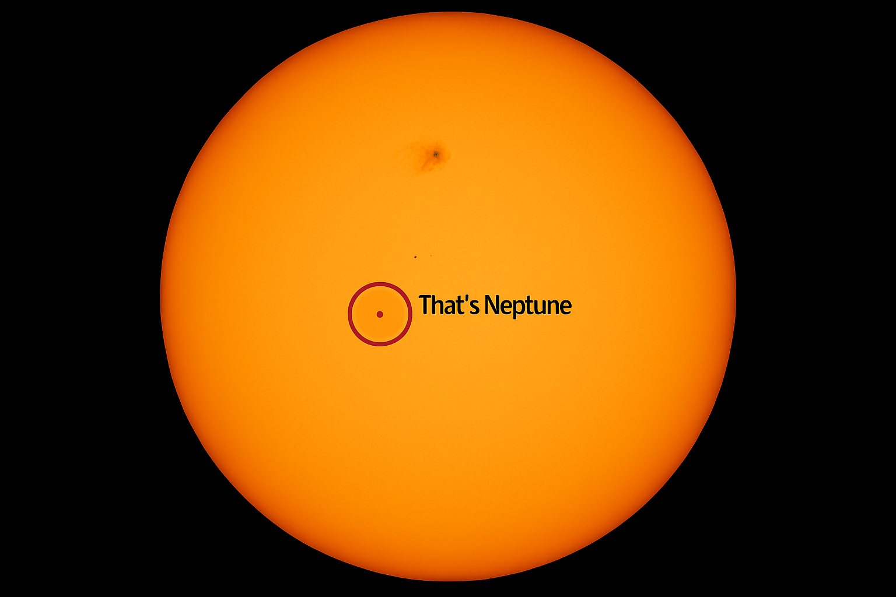

Neptune
Neptune is the eighth planet from the Sun, making it the most distant planet in our solar system. It was the first planet found using maths. Astronomers noticed Uranus wobbling in its orbit and worked out that another planet must be pulling on it. Neptune has the fastest winds in the solar system, reaching over 2,000 km/h! Its biggest moon, Triton, travels around Neptune backwards, which suggests it was captured from further out in space.
| Neptune Facts | |
|---|---|
| Diameter | 49,528 km |
| Mass | 1.02 × 1026 kg (17 Earths) |
| Moons | 16 |
| Rings | 5 |
| Orbit Distance | 4,498,396,441 km (30.07 AU) |
| Orbit Period | 60,190 days (about 165 years) |
| Temperature (cloud tops) | -201°C |
This is what Neptune looks like compared to the Sun
